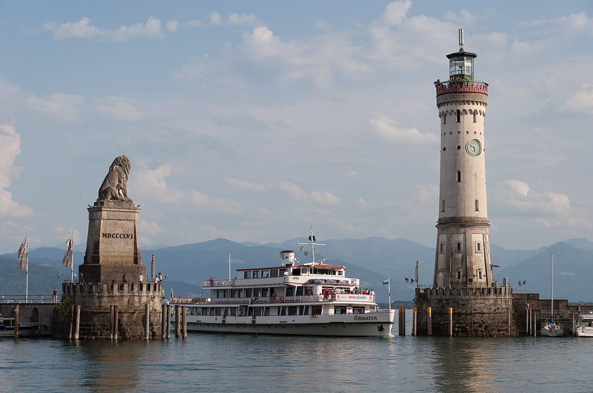

Bodensee: A Stunning German Lake with Scenic Views & Delicious Food

The Bodensee, also known as Lake Constance, is one of Germany's most breathtaking natural wonders. Stretching across three countries (Germany, Austria, and Switzerland), this massive lake offers stunning landscapes, charming towns, and delicious local cuisine.
Best Time to Visit
The ideal time to visit the Bodensee is from late spring to early autumn (May to September). The weather is warm, perfect for swimming, boat trips, and outdoor activities. July and August are peak months with lively festivals, but spring offers beautiful blossoms and fewer crowds.
How to Get There
The Bodensee is easily accessible by train, car, or plane. Major cities like Friedrichshafen and Konstanz have train connections from Munich, Stuttgart, and Zurich. If flying, Friedrichshafen Airport is the closest. Driving is also convenient, with well-maintained roads along the lake.
Top Highlights
1. Mainau Island: A floral paradise with lush gardens, butterfly houses, and scenic lake views. Perfect for nature lovers.
2. Meersburg: A charming medieval town with a historic castle, vineyards, and lakeside promenades.
3. The Pfänder Mountain: Take a cable car up for panoramic views of the lake and Alps. Great for hiking too.
4. Konstanz: A lively university town with a mix of history, culture, and a beautiful harbor.
5. Rhine Falls: Just a short trip away, these powerful waterfalls near Schaffhausen are a must-see.
Local Food to Try
Bodensee cuisine is fresh and hearty. Don't miss Fischbrötchen (fish sandwiches), Kässpätzle (cheesy pasta), and locally caught whitefish like Felchen. Pair meals with local wines from vineyards around Meersburg. For dessert, try Swabian apple strudel.
Whether you're interested in nature, history, or simply relaxing by the water, the Bodensee is a fantastic destination with something for everyone.
Haiktec
- Saarland & Moselle Family Adventures: 7 Fun-Filled Days Exploring Nature & Culture
- Ultimate Baltic & North Sea Travel Budget Planner for Women
- Discovering Rhine, Frankfurt & Heidelberg: A Female Traveler's Guide to History, Culture & Hidden Gems
Text mit KI erstellt und automatisch geprueft.